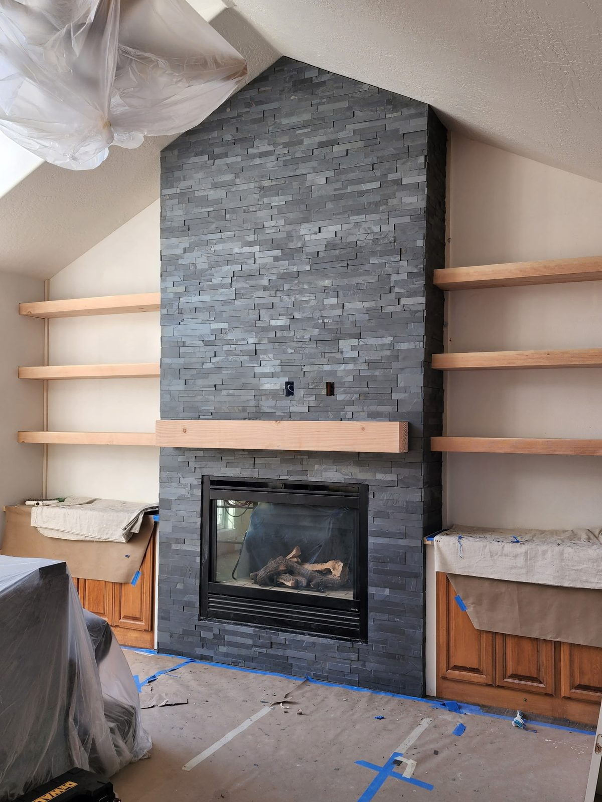
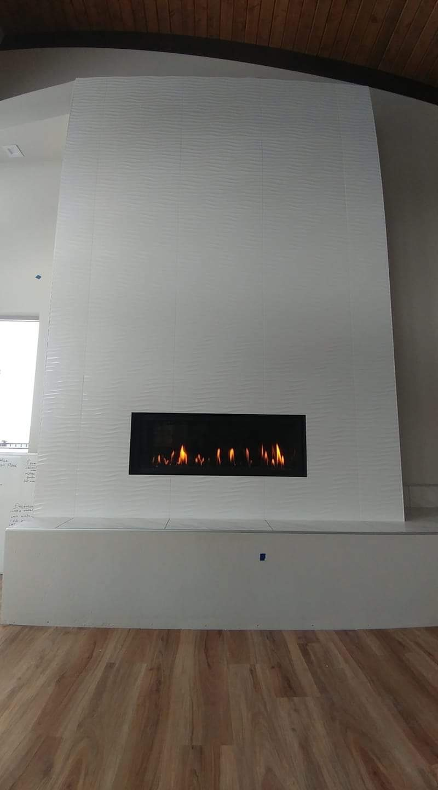
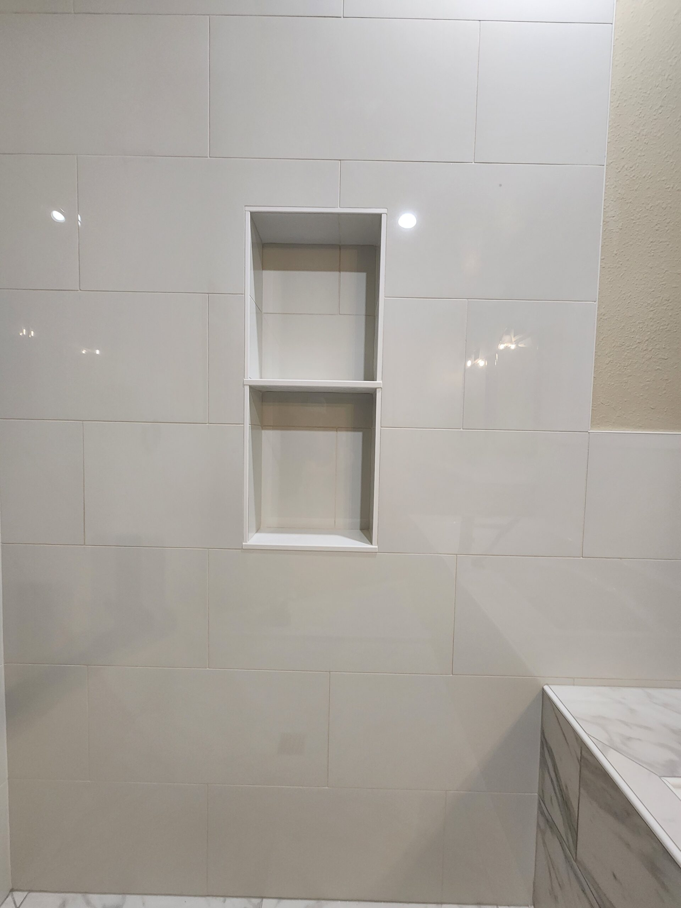

Recent Work
Tile Installation Projects
A look at recent tile installation work from DCB Construction in the Hayden region.




Tile floors, walls, showers, backsplashes, and fireplace surrounds — installed right the first time for Hayden homes.
Tile is the difference between a remodel that looks great for a year and one that looks great for 20. The substrate prep, waterproofing, and grout work are what determine whether tile lasts — and they're exactly the steps that get rushed by less-experienced installers. DCB Construction LLC has been installing tile in Hayden homes for over a decade — ceramic, porcelain, natural stone, mosaic, large-format — across floors, walls, showers, backsplashes, and fireplace surrounds.
We work with the material you want and the substrate you have. We don't shortcut the underlayment, we don't paint over uneven subfloors, and we don't grout with the wrong product for the application.
A look at recent tile installation work from DCB Construction in the Hayden region.



Hayden brings us more natural stone and more heated floor than either of the other two towns, largely because of the size and specification of the homes around the lake and north of the centre.
Natural stone is a different material to work with than porcelain and it behaves differently once it is down. Marble, travertine and slate vary from piece to piece, which is much of the appeal, but it means the layout has to be dry-laid and blended across the whole floor before anything is set rather than pulled tile by tile out of the box. Stone is also porous: it needs sealing on installation and periodically afterwards, and some stones will not tolerate acidic cleaners at all. None of that is a reason to avoid it, but it should be a decision made with the maintenance in view.
Electric floor heat is the other request we get most often here. It goes down as a cable or a mat set into an uncoupling membrane beneath the tile, which means it has to be planned alongside the tile rather than added later. Retrofitting a heated floor means pulling the finished floor up. If the floor is already coming out for other reasons, it is the cheapest it will ever be to add.
Large-format and slab-look porcelain is common in the newer Hayden builds and gives you much of the appearance of stone with none of the sealing. It puts the same demand on substrate flatness that any large tile does, so the prep does not get any shorter.
Looking for other work in Hayden? See: kitchen remodeling in Hayden, bathroom remodeling in Hayden, walk-in showers in Hayden, or visit our Hayden area page.
It depends how you use the room. Stone has depth and variation that porcelain can imitate but not match, and in a feature area it is worth it. It is porous, so it needs sealing at installation and resealing periodically, and acidic cleaners will etch some stones regardless of sealer. In a high-traffic entry or a household with young children, a slab-look porcelain will look similar and ask nothing of you. We will give you a straight answer for the specific room rather than talk you into the more expensive material.
Yes, and Hayden is where we are asked for it most. Electric radiant goes in as a cable or mat set into an uncoupling membrane directly under the tile, with the thermostat sensor run at the same time. Because it lives under the tile it has to be installed with the tile. If the floor is already being replaced the added cost is mostly the material, which is why it is worth deciding before the job starts rather than a year later.
Labor is $8 to $20 per square foot plus tile and materials, with standard 12x24 porcelain on a level subfloor around $10 to $12. Natural stone and large-format sit at the upper end because both take longer to lay out and set. A kitchen backsplash runs $800 to $1,800 installed and a bathroom floor $1,500 to $3,500. Heated floor is quoted as its own line so you can see what it actually adds.
Tile alone does not usually require a permit, but the remodel around it often does. Hayden parcels fall under city or Kootenai County jurisdiction depending on where the property sits, so we establish which applies and file as part of the wider project.